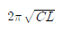
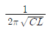
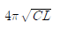
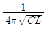
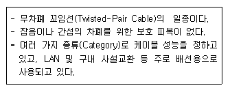
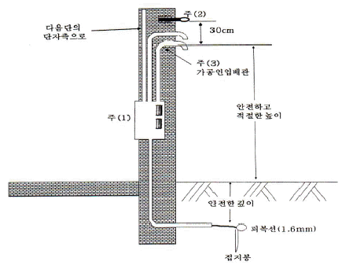

통신설비기능장 (2012-10-06 기출문제)
1과목: 임의 과목 구분(20문항)
1. 다음 중 푸시 버튼 전화기에 대한 설명으로 잘못된 것은?
- 선택신호는 음성 주파수대의 신호를 사용한다.
- 푸시 버튼에는 숫자 버튼외 서비스 버튼이 있다.
- 저군 4 주파수와 고군 3 주파수와의 음성 주파수대 2개를 조합하여 선택신호를 구성한다.
- Data 전송용 또는 원격 제어용에도 사용할 수 있다.
(정답률: 93%)

2. 전화선에 의해 유기되는 갑작스런 전압의 변화에 대한 전자식 전화회로의 IC 손상을 방지하기 위 사용되는 소자는 다음 중 어느 것인가?
- 저항
- 바리스터
- 콘덴서
- 트랜지스터
(정답률: 95%)
3. 다음 중 유선전화 선로시스템에서 사용하는 보안장치가 아닌 것은?
- 피뢰기
- 퓨즈
- 열선륜
- 포토카플러
(정답률: 83%)
4. 다음 중 DPCM 송신기의 구성요소가 아닌 것은?
- 양자화기
- 예측기
- 복호기
- 부호화기
(정답률: 89%)
5. 자동식 전화기의 단속비를 전류계법에 의하여 측정하였던바 평상시에 흐르는 전류는 120[mA]이고, 전화기에 의한 임펄스 송출시에 흐르는 전류는 40[mA]이었다. 이 경우 브레이크(Break)율은 약 몇 [%]인가?
- 약 22.2
- 약 33.3
- 약 44.4
- 약 66.7
(정답률: 80%)
6. 다음 전자교환기 장치 중 호처리 과정에서 호에 관련된 정보를 일시적으로 기억하는 장치는?
- 중앙제어장치(CC)
- 호처리 기억장치(CS)
- 프로그램 기억장치(PS)
- 신호분배장치
(정답률: 92%)
7. 다채널 입력광원을 하나의 출력으로 다중화하는 기능은 물론 필요채널의 광세기를 원하는 대로 감쇠하는 기능을 가진 소자는?
- I-MUX
- C-MUX
- P-MUX
- V-MUX
(정답률: 79%)
8. 다음 중 ADPCM에서 주로 사용하는 양자화는?
- 선형 양자화
- 비선형 양자화
- 비예측 양자화
- 적응형 양자화
(정답률: 79%)
9. 다음 중 양자화 스텝수가 8비트이면 양자화 계단수는 얼마인가?
- 64
- 128
- 256
- 512
(정답률: 92%)
10. PCM-24 방식에서 1프레임시간(Tf)과 1통화로에 할당된 시간(Tc)은 얼마인가?
- Tf=120[μs], Tc=4.2[μs]
- Tf=125[μs], Tc=5.2[μs]
- Tf=130[μs], Tc=6.2[μs]
- Tf=135[μs], Tc=7.2[μs]
(정답률: 86%)
11. 다음 중 교환기에 있어 계단결선(graded multiple)에 따른 장점에 속하지 않는 것은?
- 내부 봉쇄를 줄일 수 있다.
- 출중계선의 손실호를 감소시킨다.
- 출중계선의 능률을 향상시킨다.
- 출중계선의 부하량을 균등화시킨다.
(정답률: 74%)
12. 10[MHz]의 반송파를 진폭이 20[V]이고 주파수가 15[kHz]인 변조신호로 주파수변조하는 경우 피변조파의 대역폭은 얼마인가? (단, 주파수감도계수 kf는 60[Hz/V]이다.)
- 30.5[kHz]
- 32.4[kHz]
- 35.7[kHz]
- 33.8[kHz]
(정답률: 53%)
13. 복사저항 20[Ω], 복사효율 80[%]인 안테나에 100[W]의 전력이 공급되고 있을 때, 방사전력은 얼마인가?
- 160[W]
- 120[W]
- 80[W]
- 60[W]
(정답률: 85%)
14. 다음 중 CDMA 시스템에서 이동통신 기지국 제어장치(BSC)의 기능과 관계가 없는 것은?
- 단말기와 기지국의 송신출력 제어기능
- 셀간 소프트 핸드오프(soft hand off) 수행 및 하드 핸드오프(hard hand off) 결정
- 시스템 클럭의 생성 및 배급기능
- 트랜스코딩 및 보코딩 기능
(정답률: 59%)
15. 슈퍼헤테로다인 수신기에서 중간주파수가 455[kHz]이면, 860[kHz]의 방송에 대한 영상주파수는 얼마인가?
- 1,570[kHz]
- 1,770[kHz]
- 1,970[kHz]
- 2,170[kHz]
(정답률: 90%)
16. 다음 중 포락선 검파기에 대한 설명으로 가장 거리가 먼 것은?
- AM 검파기로 가장 많이 사용되고 있다.
- 포락선 검파기의 출력파형은 변조된 신호의 포락선과 같다.
- 포락선 검파기는 정류형 검파기보다 다소 복잡하나 효율은 좋다.
- 출력파형의 찌그러짐 감소를 위하여는 시정수가 반송주파수에 대해 적당해야 한다.
(정답률: 73%)
17. 다음 중 FM 수신기에서 주로 사용하는 잡음 억제회로가 아닌 것은?
- AFC 회로
- Squelch 회로
- Muting 회로
- Limiter 회로
(정답률: 86%)
18. IS-95 CDMA 이동통신시스템에서 역방향 링크 액세스 채널의 용도에 속하지 않은 것은?
- 단말기에서 전화를 걸 때
- 위치 등록을 실시할 때
- 기지국으로부터의 호출에 대해 응답할 때
- 통화 중에 기지국에 특정한 제어신호를 보낼 때
(정답률: 81%)
19. 다음 중 의사잡음(PN 부호)에 대한 설명으로 적합하지 않은 것은?
- 백색잡음과 유사한 스펙트럼을 갖는다.
- 주파수 대역폭을 확산시킨다.
- 일정한 주기를 갖는 부호로서 주로 FDMA에 이용된다.
- 재밍(jamming)을 최소화 할 수 있다.
(정답률: 72%)
20. 다음 중 QAM 방식의 특징으로 틀린 것은?
- QAM 신호는 2개의 직교성 DSB-SC 신호를 선형적으로 합성한 것이다.
- M진 QAM과 M진 PSK의 전력스펙트럼과 대역폭 효율은 동일하다.
- 16진 QAM은 4개의 레벨을 갖는 4개의 위상과 4개의 레벨을 갖는 8개의 위상의 조합으로 구성된다.
- QAM의 소요 전송대역은 B(R)=2B로서 DSB-SC의 경우와 동일하다.
(정답률: 88%)
2과목: 임의 과목 구분(20문항)
21. FM 수신기에서 진폭 제한기에 대한 설명 중 잘못된 것은?
- 충격성 잡음의 영향을 경감할 수 있다.
- 혼신이나 잡음으로 생긴 진폭변조 성분을 제거하는 목적으로 사용된다.
- 일정 레벨 이상의 신호를 제한한다.
- 중간주파 증폭기의 앞단에 접속된다.
(정답률: 74%)
22. 다음 중 λ/4 수직접지 안테나의 고유파장은?
- 안테나 길이의 1/4배
- 안테나 길이의 1/2배
- 안테나 길이의 4배
- 안테나 길이의 2배
(정답률: 76%)
23. 지상에서 수직으로 전파를 발사하여 2[ms] 뒤에 반사파가 측정되었다. 이때 전리층의 이론상 높이는?
- 400[km]
- 300[km]
- 200[km]
- 100[km]
(정답률: 76%)
24. 이동통신에서 이동국이 다른 이동통신 교환기 서비스 영역 또는 다른 사업자 영역으로 이동하여도 통화가 가능하도록 하는 기능은?
- 위치등록
- 로밍
- 핸드오버
- 호출
(정답률: 91%)
25. 다음 중 이동통신에서 주로 사용되는 주파수 대역은?
- HF
- VHF
- UHF
- SHF
(정답률: 79%)
26. 1Frame의 데이터 값이 7[bit], 표본화 주파수 fs가 8[kHz], 신호 Parity bit와 프레임 동기 bit가 각각 1[bit]인 PCM 24ch 시분할다중화기의 전송속도로 적합한 것은?
- 64[kbps]
- 128[kbps]
- 1,544[Mbps]
- 2.048[Mbps]
(정답률: 78%)
27. 펄스코드변조(PCM)에서 fold-over라고도 불리는 에일리어싱(aliasing)이 발생하는 이유는?
- 양자화 스텝(step) 수가 8[bit] 초과한 경우 발생하는 현상
- 양자화 스텝(step) 수가 8[bit] 미만인 경우 발생하는 현상
- 표본화 주파수 fs가 신호의 최대 주파수 fm의 2배 초과한 경우 발생하는 현상
- 표본화 주파수 fs가 신호의 최대 주파수 fm의 2배 미만인 경우 발생하는 현상
(정답률: 65%)
28. 다음 중 동기식과 비동기식 전송방식을 비교 설명한 것으로 틀린 것은?
- 전송단위로 동기식은 비트/문자블록 전송단위이며 비동기식은 문자 전송단위이다.
- 에러검출방식으로 동기식은 CRC 방식, 비동기식은 패리티비트 방식을 사용한다.
- 전송효율은 동기식 방식이 비동기식 방식에 비하여 효율적이다.
- 정확한 수신을 위하여 비동기식은 별도의 동기 펄스가 필요하다.
(정답률: 64%)
29. 아날로그 데이터를 디지털 형태로 변환하여 전송하고 디지털 형태를 원래의 아날로그 데이터로 변환하는 장치는?
- MODEM
- CCU
- DSU
- CODEC
(정답률: 82%)
30. 다음 중 LC 병렬 공진 회로에서 공진주파수[Hz]는?




(정답률: 80%)
31. 다음 중 TCP/IP에서 응용계층의 프로토콜이 아닌 것은?
- FTP
- TELNET
- SNA
- SMTP
(정답률: 69%)
32. 네트워크 종단 시스템(End to End) 간의 투명한 데이터 전송에 관련된 계층은?
- 응용 계층
- 네트워크 계층
- 트랜스포트 계층
- 물리 계층
(정답률: 79%)
33. 디지털 신호 중계시 장거리 전송을 위하여 사용되는 재생 중계기의 구성요소가 아닌 것은?
- 압축ㆍ신장부(comp/expanding)
- 타이밍부(retiming)
- 식별재생부(regenerating)
- 등화증폭부(reshaping)
(정답률: 71%)
34. 다음 중 QAM에 대한 설명으로 적합하지 않은 것은?
- 동기검파방식을 사용한다.
- 잡음과 위상변화에 우수한 특성을 가진다.
- M진 QAM의 대역폭 효율은 log2M[bps/Hz]이다.
- 정보신호에 따라 반송파의 주파수와 위상을 변화시키는 변조방식이다.
(정답률: 53%)
35. 다음 중 RIP 라우팅 프로토콜에 대한 최대 홉(Hop) 수와 라우팅 테이블의 업데이트 시간으로 적합한 것은?
- 15[Hops], 30[sec]
- 15[Hops], 180[sec]
- 255[Hops], 30[sec]
- 255[Hops], 180[sec]
(정답률: 88%)
36. 다음 중 오류제어, 동기제어 등의 제어절차에 대한 내용을 정의하는 포로토콜의 구성요소로 적합한 것은?
- 구문(Syntax)
- 의미(Semantics)
- 시간(Timing)
- 동기화(Synchronization)
(정답률: 76%)
37. 광파이버를 굴절률 분포에 따라 분류할 때 다음 중에서 해당하지 않은 것은?
- Step Index Fiber
- Saw Index Fiber
- Graded Index Fiber
- Triangular Index Fiber
(정답률: 84%)
38. 다음은 해저 광통신에 사용되는 EDFA 광증폭기에 대한 설명으로 적합하지 않은 것은?
- EDFA(Erbium Doped Fiber Amplifier)의 약자이다.
- 1,301[nm] 파장대에서 주로 사용된다.
- 펌핑용 레이저 다이오드, 광아이솔레이터, 파장결합 커플러 등으로 구성된다.
- 증폭 효율이 높고, 잡음 지수가 낮다.
(정답률: 90%)
39. 다음은 어떤 케이블 분류에 대한 특징을 설명한 것이다. 설명하는 케이블 종류는 무엇인가?

- STP 케이블
- UTP 케이블
- PIC 케이블
- SMF 케이블
(정답률: 86%)
40. 다음 중 꼬임선 케이블에 대한 특징을 설명으로 틀린 것은?
- 절연된 두 개의 구리선을 나선모양으로 구성되어 있다.
- 아날로그, 디지털 통신 모두에서 가장 많이 사용된다.
- 동축케이블, 광섬유 등에 비해 가격이 저렴하고 사용이 쉬우나 전송속도와 거리에 제약이 따른 .
- 아날로그 신호에서는 5~6[km]마다, 디지털 신호에서는 2~3[km]마다 중계기(Repeater)가 필요하다.
(정답률: 76%)
3과목: 임의 과목 구분(20문항)
41. 케이블 배선방법 중 가입자 이동이 심한지역에 가장 적당한 배선법은 어느 것인가?
- 중복 배선법
- 자유 배선법
- 연락 배선법
- 고정 배선법
(정답률: 68%)
42. 다음 중 동선의 트위스트 페어(Twisted pair)의 특징으로 맞지 않는 것은?
- 가격이 저렴하고 설치가 간편하다.
- 하나의 케이블에 여러 쌍의 꼬임선 들을 절연체로 피복하여 구성한다.
- 다른 전송매체에 비해 거리, 대역폭 및 데이터 전송률 면에서 제한적이지 않다.
- 유도 및 간섭현상을 줄이기 위해서 균일하게 서로 꼬여 있는 형태의 케이블이다.
(정답률: 73%)
43. 다음 중 가공통신 선로설비의 설치조건으로 옳지 않은 것은?
- 도로상에 설치되는 경우는 노면으로부터 4.5[m] 이상일 것
- 철도 또는 궤도를 횡단하는 경우 그 철도 또는 궤도면으로부터 6.5[m] 이상일 것
- 다른 사람이 설치한 가공선로 설비로부터 1[m] 이상의 거리를 유지할 것
- 7,000[V]가 넘는 가공강전류 전선용 전주에 가설되는 경우에는 노면으로부터 5[m] 이상일 것
(정답률: 70%)
44. 광섬유는 입사단에 고출력의 광 pulse를 입사시키면 입사된 광 pulse의 일부가 산란되어 입사단 쪽으로 되돌아오는데 이 빛을 이용하여 광섬유의 길이를 구할 수 있다. 굴절률 n=1.48, t=1[μsec]라고 할 때 광섬유의 길이는 약 얼마인가?
- 57.6[m]
- 101.3[m]
- 153.4[m]
- 202.7[m]
(정답률: 66%)
45. 측정값을 M, 참값을 T라 하면 오차 ε를 나타내는 관계식으로 옳은 것은?
- ε = T -M
- ε =M - T
- ε =M + T
- ε =M × T
(정답률: 80%)
46. 다음 중 광케이블의 접속손실을 후방산란법으로 측정할 때 필요한 장비로 가장 적합한 것은?
- 광원(LS)
- 광전력계(PM)
- 광분산측정기(ODA)
- 광펄스시험기(OTDR)
(정답률: 92%)
47. 어떤 양을 수량적으로 표시하려면 그 양과 같은 종류의 기준이 필요한데 이 비교 기준을 무엇이라 하는가?
- 측정
- 오차
- 보정
- 단위
(정답률: 89%)
48. 수신 신호 레벨이 -15[dBm]인 회선 종단에서 S/N비를 측정했을 경우 40[dB]였다. 이 회선의 잡음 레벨은?
- -30[dBm]
- -55[dBm]
- 30[dBm]
- 55[dBm]
(정답률: 75%)
49. PCM에서 ISI를 측정하기 위해서 eye pattern을 이용하는데 눈을 뜬 상하의 높이는?
- 잡음의 여유도
- 신호의 정도
- 시스템의 감도
- 채널의 필터 특성
(정답률: 79%)
50. 다음 중 광섬유 케이블의 측정방식인 후방산란방법에 대한 설명을 틀린 것은?
- 광섬유의 균일 및 결함이 생긴 지점을 찾는데 사용하는 방법이다.
- 출력 단에서 광전력을 측정하며 계산하는 방법이다.
- 입력 단에서만 측정하므로 측정작업이 간단하다.
- 거리에 따른 손실계수의 측정이 가능한 방법이다.
(정답률: 73%)
51. 방송통신설비의 분계점에 대한 설명으로 잘못된 것은?
- 사업용방송통신설비의 분계점은 사업자 상호 간의 합의에 따른다. 다만, 국립전파연구원이 분계 을 고시한 경우에는 이에 따른다.
- 사업용방송통신설비와 이용자방송통신설비의 분계점은 도로와 택지 또는 공동주택단지의 각 단지와의 경계점으로 한다.
- 국선과 구내선의 분계점은 사업용방송통신설비의 국선접속설비와 이용자방송통신설비가 최초로 접속되는 점으로 한다.
- 분계점에서의 접속방식은 간단하게 분리ㆍ시험할 수 있어야 한다.
(정답률: 79%)
52. 이동통신서비스 또는 휴대인터넷서비스 등에 사용되는 무선송수신기와 안테나간에 연결하는 선로를 지칭하는 명칭은?
- 급전선
- 통신케이블
- 통신회선
- 통신선로
(정답률: 86%)
53. 아래 그림은 국선을 지하로부터 건물로 인입하는 경우의 표준도이다. 그림에서 외부가 차도일 우 매설된 피복선으로부터 외부 차도까지의 안전한 깊이는 얼마 이상이어야 하는가?

- 60[cm]
- 80[cm]
- 100[cm]
- 120[cm]
(정답률: 74%)
54. 방송통신위원회는 전파자원을 확보하기 위하여 시행하는 시책으로 맞지 않는 것은?
- 새로운 주파수의 이용기술 개발
- 이용중인 주파수의 이용효율 향상
- 주파수의 국제등록
- 전파의 인체유해성에 관한 연구
(정답률: 78%)
55. 의사결정을 위하여 비용에 대하여 검토 중이다. 과거에 이미 지출되어서 되돌릴 수 없는 비용으로 현재에 어떤 결정을 내리더라도 회복될 수 없으므로 지금의 의사결정이나 분석에서 배제되어야 할 비용을 뜻하는 용어는 어떤 것인가?
- 고정비용
- 변동비용
- 기회비용
- 매몰비용
(정답률: 77%)
56. 어떤 조건 아래에서 취해진 데이터가 여러 개(약 100개 이상) 있을 때, 데이터가 어떤 값을 중심으로 어떤 분포를 하고 있는가를 조사하는데 사용되는 그림은?
- 체크시트(Check Sheet)
- 파레토도(Pareto Diagram)
- 산포도(Scattergram)
- 히스토그램(Histogram)
(정답률: 78%)
57. 파레토도(Pareto Diagram)에 대한 설명 중 틀린 것은?
- 불량이나 수정손실 등 어떤 사건이나 현상을 중요도 순으로 시각적으로 파악하기 쉽게 작성한 그림이다.
- 막대그래프와 꺾은선 그래프를 혼합한 형태이다.
- 불량(중요한) 항목이 많은 항목으로부터 오른쪽에서 왼쪽으로 나열한다.
- 파레토 분석을 통해 문제의 핵심을 찾아 개선, 관리해 나간다.
(정답률: 78%)
58. 생산에서 자재가 제품으로 변환되는 과정을 (A)이라 하고, 이러한 변환과정을 행하기 위한 자원의 활동을 (B)이라 한다. (C)는 (A)과 (B)을 대상으로 한 과학적인 조사ㆍ연구를 통하여 시스템에서의 낭비요소를 제거하고 효과적이고 합리적인 생산시스템을 모색하여, 이를 작업표준으로 설정하는 과정을 말한다. 빈칸에 들어갈 용어로 가장 적당한 것은?
- A: 활동, B: 이동, C: 작업활동연구
- A: 공정, B: 작업, C: 작업방법연구
- A: 작업, B: 공정, C: 작업방법연구
- A: 공정, B: 작업, C: 작업시간연구
(정답률: 80%)
59. 다음 중 간접적으로 표준시간을 산출하는 기법이 아닌 것은?
- PTS(Predetermined Time Standard)
- 표준자료법
- 스톱워치법
- 실적자료법
(정답률: 82%)
60. 크기 N의 로트로부터 크기 n의 시료를 뽑아내는 방법으로 행운권추첨, 난수표 등에 많이 쓰이는 샘플링검사는?
- 지그재그샘플링
- 계통샘플링
- 단순랜덤샘플링
- 취락샘플링
(정답률: 80%)